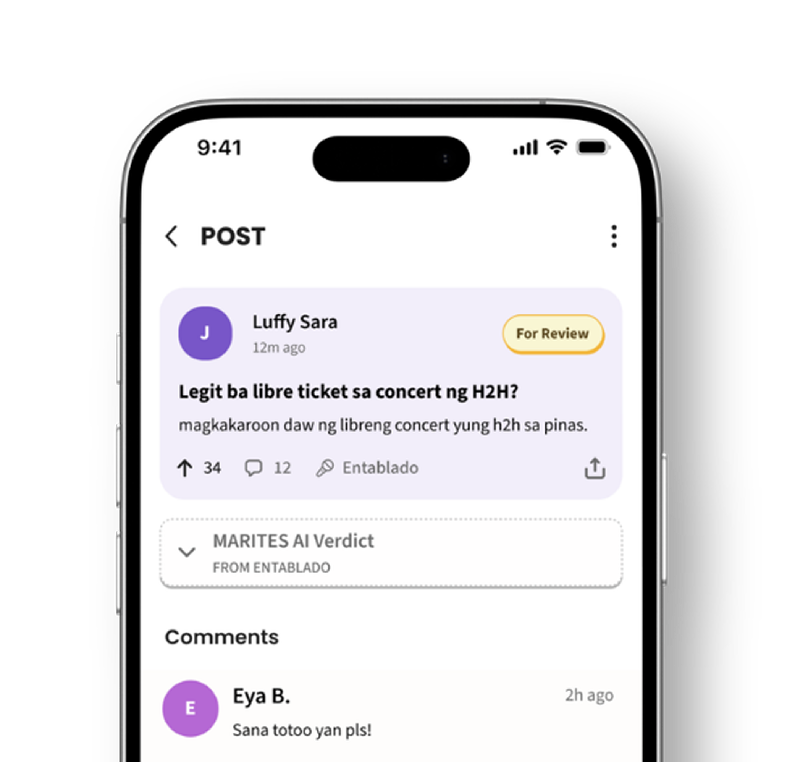
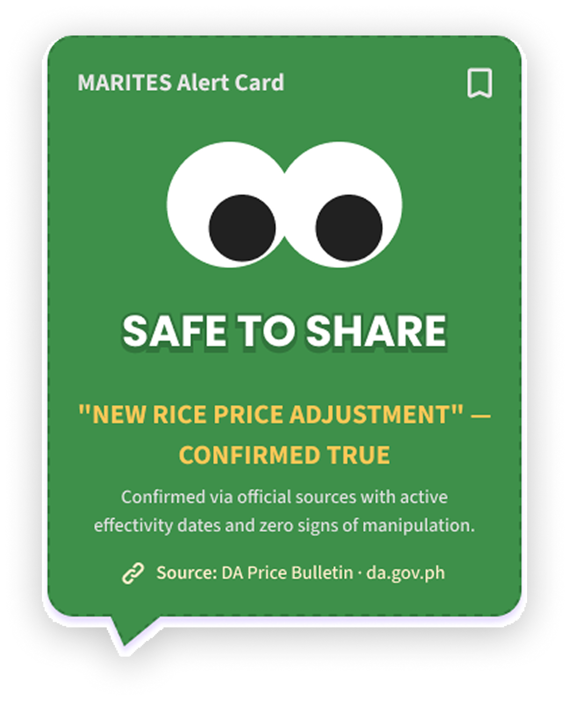
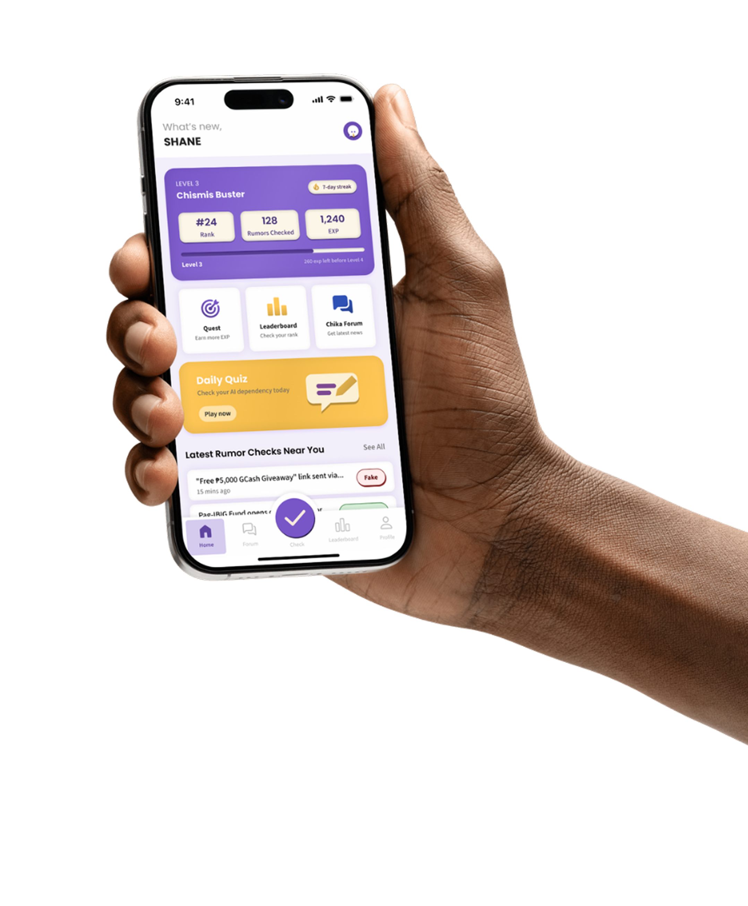
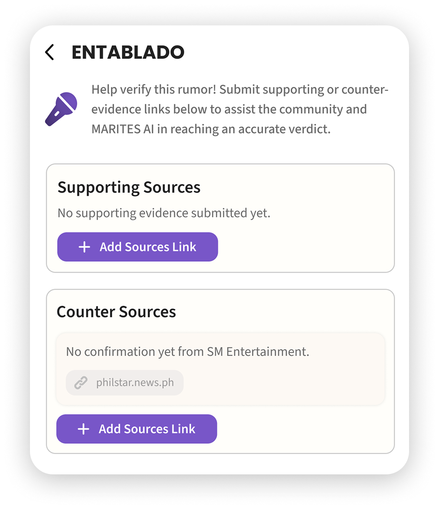

Marites
Taglish Fact-Checking and Media Literacy App




About the Project
MARITES is a fact-checking app made for the UNESCO Youth Hackathon 2026. Fact-checks are usually long and in formal English, so people skip them and trust whatever has the most likes. Here, you submit a suspicious post, get a verdict with a short Taglish explanation and sources, then share it as an Alert Card in your group chat. There are also quizzes to help you spot fakes yourself.
Goal
Make verifying information as quick and familiar as sharing chismis, so Filipinos can catch fake news and pass on the facts instead of the rumor.
Research Method & Insights
We ran a needs assessment survey with 15 people, asking how often they see fake news, where they see it, and how they check it. We also looked at existing fact-checking efforts in the Philippines (Rappler, Tsek.ph, Oplan Kontra Fake News) and read up on the Reuters Institute, UNESCO, and a Far Eastern University study to see where they fall short.
100%
see fake news online
26.7%
use fact-checking sites
93.3%
want instant verification
The Approach
The idea comes from the “marites” itself. Filipinos already love chismis, so instead of fighting that, the app points it toward checking first. The tone is casual and the explanations are in Taglish, so a fact-check reads like something a friend would tell you, not a news report.
The verdict is a three-level scale (Fake News, For Review, Verified True) with red, yellow, and green, so you get the answer fast. “For Review” is the default when the AI isn’t sure, so it never forces a confident answer it can’t back up. Every result also shows its sources, so users can judge the evidence themselves.
Since a correction only helps if it reaches people, the result turns into an Alert Card you can drop straight into a group chat. The forum, quizzes, and EXP and streaks are there so users get better at spotting fakes on their own and not just rely on the app.

Reflection
The hardest part of MARITES wasn’t the UI, it was building trust. A wrong “Fake News” label can do big damage, so we made “For Review” the default whenever the AI isn’t sure, and put sources on every result so users can check the news themselves.
We also learned that a correction only works if it reaches people. That’s why the result turns into an Alert Card you can drop straight into a group chat, since that’s where most of the rumors spread anyway.